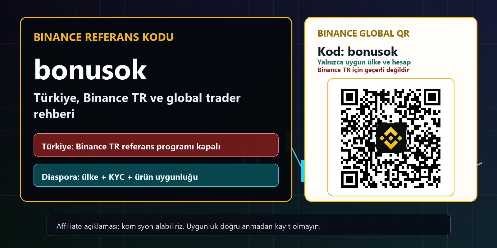
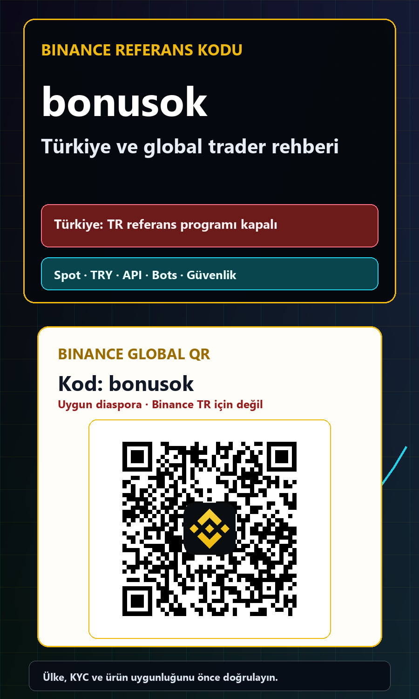
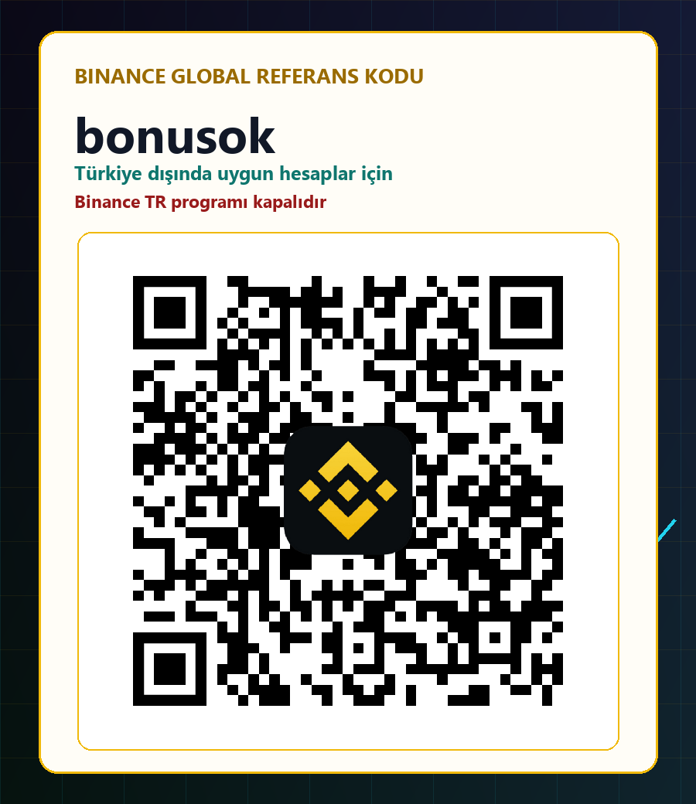

Önemli Türkiye notu, 2026-07-11 tarihinde kontrol edildi: Binance TR referans programı 4 Ekim 2024'te sona erdi. bonusok bir Binance TR kodu değildir. Türkiye'de yaşayan kullanıcılar bu sayfadaki QR veya bağlantıyı yerel kayıt promosyonu olarak kullanmamalıdır. Referral alanı yalnızca Türkiye dışında, gerçek ikamet ülkesinde Binance Global ve ilgili program için uygun Türkçe konuşan kullanıcılar içindir.
Binance Referans Kodu bonusok: Türkiye ve Global Rehber 2026
Binance referans kodu bonusok için Türkiye ve Türkçe konuşan diaspora odaklı güncel rehber: Binance TR referans programı durumu, SPK kontrolü, Binance Global uygunluğu, ücretler, TRY, Spot, Futures, Earn, API, Trading Bots, KYC, güvenlik ve 2026 ürün yenilikleri. Bu içerik finansal, hukuki veya vergi danışmanlığı değildir.


Gerçek QR yalnızca uygun Binance Global ülkeleri içindir; Türkiye'deki Binance TR referans programı kapalıdır.
Kısa cevap: bonusok Türkiye'de geçerli bir Binance TR kodu mu?
Hayır. Binance TR, Sermaye Piyasası Kurulunun 19 Eylül 2024 tarihli ilke kararları doğrultusunda yerel referans programını 4 Ekim 2024 itibarıyla sona erdirdiğini resmi olarak duyurdu. Bu tarihten sonra Binance TR üzerinden erişilen referans kodlarının geçersiz olduğu ve kod alanının kapatıldığı açıklandı. Bu nedenle bonusok kodunu Binance TR için güncel bir kampanya, ücret indirimi ya da kayıt avantajı olarak sunmak doğru değildir. Türkiye'de ikamet eden okuyucu, bu sayfadaki QR kodunu Binance TR promosyonu gibi değerlendirmemelidir. Yerel hesap açılışı ve ürün kullanımı için yalnızca Binance TR'nin resmi ekranları, koşulları ve güncel duyuruları esas alınmalıdır.
bonusok, Binance Global kayıt bağlantısında kullanılan bir referans parametresidir. Sayfadaki bağlantı ve gerçek QR kodu yalnızca Türkiye dışında yaşayan, ikamet ettiği ülkede Binance Global ve ilgili referans programı resmen kullanılabilen Türkçe konuşan kişiler içindir. Vatandaşlık ya da konuşulan dil tek başına uygunluk sağlamaz; gerçek ikamet, hesap kuruluşu, KYC sonucu, ürün görünürlüğü ve yerel kurallar belirleyicidir. Türkiye'de yaşayan bir kişinin farklı ülke seçmesi, VPN kullanması, yanlış adres vermesi veya başkasının hesabını kullanması uygunluk yaratmaz. Bu rehberin ilk amacı kayıt sayısını şişirmek değil, kalıcı işlem hacmi üretebilecek doğru kullanıcıyı yanlış yönlendirmeden filtrelemektir.
Türkiye'de Binance TR ve Binance Global ayrımı
Binance TR, Türkiye'de yerel şirket, TRY işlem çiftleri, banka transferleri ve ülkeye özgü ürün akışı sunan ayrı bir platformdur. Binance Global ise farklı ülkelerde farklı tüzel kişiler, ürünler ve kayıt kurallarıyla çalışır. İki uygulamanın marka ailesi aynı görünse bile hesap sözleşmesi, ücret tablosu, kampanyalar, varlık listesi, Earn seçenekleri, vadeli işlemler, API yetenekleri ve para yatırma yöntemleri aynı olmak zorunda değildir. Bu nedenle internette bulunan eski bir Binance referans kodu yazısı, Binance TR ile Global hesabı birbirine karıştırıyorsa güvenilir bir kayıt rehberi değildir. Önce hangi hesap kuruluşuna yönlendirildiğinizi ve hangi sözleşmeyi kabul edeceğinizi görün.
Türkiye'deki okuyucu için faydalı soru 'hangi kod daha yüksek bonus veriyor' değil, 'hangi platform ve ürün gerçek ikametim için açık, düzenleyici süreç hangi aşamada ve maliyet yapısı nedir' sorusudur. Türkçe konuşan diaspora için de aynı ayrım geçerlidir. Almanya, Hollanda, Fransa veya başka bir EEA ülkesinde yaşayan kişi Türkiye vatandaşı olsa bile EEA kurallarına tabidir; Körfez, Asya, Afrika veya Amerika'da yaşayan kişi ise kendi ülkesindeki Binance kuruluşunu ve ürün listesini kontrol etmelidir. bonusok yalnızca resmi kayıt ekranında kod açıkça görünüyorsa ve ülke uygunluğu doğrulanmışsa anlamlıdır.
SPK geçici listesi ne anlatıyor, ne anlatmıyor?
SPK'nın güncel Faaliyette Bulunanlar Listesinde Binance Turkey Kripto Varlık Alım Satım Platformu AŞ, eski unvanıyla BN Teknoloji AŞ, yer alıyor. Ancak listenin başındaki açıklama kritik önemdedir: listede bulunmak, kuruluşun ilgili mevzuat uyarınca yetkilendirildiği anlamına gelmez. Liste, geçici düzenleme kapsamında faaliyet göstereceğini beyan eden kuruluşlar hakkında kamuyu bilgilendirir. Dolayısıyla yalnızca şirket adını listede görmek tam faaliyet izni, yatırım garantisi veya tüm ürünlerin onaylandığı sonucu doğurmaz. Kullanıcı lisans sürecini, şirket açıklamalarını, sözleşmeyi ve ürün bazındaki güncel kuralları birlikte değerlendirmelidir.
Türkiye'de kripto varlık hizmet sağlayıcıları 6362 sayılı Sermaye Piyasası Kanunu kapsamına alındı ve 13 Mart 2025'te kuruluş, faaliyet, çalışma esasları ile sermaye yeterliliğine ilişkin iki tebliğ yürürlüğe girdi. Süreç gelişmeye devam ettiği için eski blog yazıları hızla güncelliğini kaybedebilir. Bu sayfada kontrol tarihi özellikle belirtilir ve resmi kaynaklar doğrudan bağlantılanır. Yine de hiçbir özet, kayıt veya yatırım kararından hemen önce yapılacak canlı kontrolün yerini tutmaz. SPK'nın geçici liste uyarısını görmezden gelmek de, listedeki şirketi otomatik olarak güvensiz saymak da aynı ölçüde hatalı basitleştirmedir.
10 Temmuz 2026 yenilikleri: Hızlı Alım
Binance TR mobil uygulamasının 4.4.0 sürümünde duyurulan Hızlı Alım özelliği, favori listesindeki bir varlığın yanındaki flaş simgesiyle önceden belirlenmiş tutarda hızlı emir vermeyi amaçlıyor. Aktif trader açısından avantaj, menüler arasında daha az zaman kaybetmek ve izlenen varlığa daha kısa yoldan erişmektir. Ancak hız, iyi fiyat anlamına gelmez. İşlemden önce gösterilen tutarı, fiyatı, spreadi, olası komisyonu ve emrin hangi yöntemle gerçekleşeceğini kontrol etmek gerekir. Volatil bir anda tek dokunuşla karar vermek, yanlış varlık veya yanlış tutar riskini de büyütebilir.
Hızlı Alım'ı verimli kullanmak isteyen biri, favori listesini rastgele kalabalıklaştırmamalıdır. Her varlık için maksimum işlem tutarı, günlük zarar sınırı ve işlem gerekçesi önceden belirlenebilir. Özellik, hızlı piyasa takibi için kullanışlı bir ürün yeniliğidir fakat FOMO'yu disipline dönüştürmez. Kullanıcı önce küçük tutarla işleyişi test etmeli, gerçekleşen fiyatı emir geçmişinden incelemeli ve normal Al-Sat ekranıyla maliyet farkını karşılaştırmalıdır. Bu yaklaşım, yalnızca kayıt olan değil, işlem davranışını ölçen ve uzun vadede kalabilecek trader profilini çeker.
Favori Grupları ve Öne Çıkanlar nasıl kullanılmalı?
Mobil uygulama 4.4.0 ile gelen Favori Grupları, izlenen varlıkları kullanıcının belirlediği temalara ayırmasına yardım ediyor. Aktif trader; ana likit varlıklar, TRY çiftleri, yüksek volatilite, haber takibi, uzun vadeli izleme ve işlem yapılmayacak riskli varlıklar gibi ayrı gruplar oluşturabilir. Gruplama, sinyal üretmez ama karar ortamını sadeleştirir. Aynı varlığı hem kısa vadeli hem uzun vadeli planda takip ediyorsanız strateji, zaman dilimi ve risk bütçesini notlarda ayırmanız gerekir. Aksi halde iyi organize edilmiş bir favori listesi bile plansız işlem sayısını artırabilir.
Öne Çıkanlar özelliği piyasadaki hareketleri ve dikkat çeken varlıkları keşfetmeyi kolaylaştırabilir. Fakat popülerlik ile kalite aynı şey değildir. Yüksek yükseliş gösteren veya sosyal ilgisi artan token için likidite, spread, arz yapısı, kilit açılımları, proje iletişimi ve olası listeleme riskleri ayrıca incelenmelidir. En sağlıklı kullanım, Öne Çıkanlar bölümünü emir düğmesi değil araştırma kuyruğu olarak görmektir. Kullanıcı önce resmi duyuruyu, işlem çiftini ve risk etiketlerini kontrol eder; sonra kendi planına uyuyorsa küçük ve ölçülü pozisyon değerlendirir.
PRER: Spot emirlerinde fiyat bandı kontrolü
Binance TR, Fiyat Aralığı Uygulama Kuralını 6 Mayıs 2026'dan itibaren belirli Spot işlem çiftlerinde kademeli olarak devreye aldı. PRER, son piyasa verilerinden hesaplanan referans fiyat etrafında dinamik üst ve alt bantlar oluşturur. Bir emrin tamamı veya kalan kısmı bant dışındaki likiditeyle eşleşmek zorunda kalırsa ilgili bölüm iptal edilir ve emir defterinde beklemez. Normal piyasa koşullarında etkisi sınırlı olabilir; sert hareket, düşük likidite veya hatalı fiyat dönemlerinde ise emir sonucunu doğrudan değiştirebilir.
Aktif trader bu kuralı emir başarısızlığı gibi okumamalı, emir durumunu ve gerçekleşen miktarı kontrol etmelidir. Otomatik strateji kullanılıyorsa kısmi gerçekleşme, iptal ve yeniden fiyatlama senaryoları test edilmelidir. Kör şekilde aynı emri tekrar göndermek, istenenden büyük pozisyon oluşturabilir. Piyasa emri kullanmak da her zaman çözüm değildir; spread ve kayma maliyeti büyüyebilir. PRER, Türkiye odaklı bu içeriği değerli yapan güncel operasyon ayrıntılarından biridir çünkü eski referans kodu sayfalarının çoğu yalnızca promosyonu konuşur, gerçek emir davranışını açıklamaz.
TRY çiftleri, likidite ve gerçek işlem maliyeti
Binance TR yeni TRY çiftleri eklemeye devam ediyor; örneğin RE/TRY çifti 18 Haziran 2026'da listelendi. Yeni çiftler yerel para ile doğrudan işlem kolaylığı sağlayabilir, fakat yeni listelenen veya düşük hacimli piyasalarda spread ve fiyat etkisi daha yüksek olabilir. Sadece ekranda sıfır veya düşük komisyon görmek toplam maliyetin düşük olduğunu kanıtlamaz. Alış ve satış fiyatı farkı, emir defteri derinliği, kayma, banka transfer süresi ve alternatif çift üzerinden dönüşüm maliyeti birlikte hesaplanmalıdır.
Bir aktif trader aynı işlemin TRY, USDT veya başka bir quote varlık üzerinden maliyetini karşılaştırabilir. Bunun için tahmini değil, gerçek küçük emir sonuçlarını ve işlem geçmişini kullanmak daha doğrudur. Büyük emri tek seferde göndermek yerine likiditeye göre bölmek faydalı olabilir; ancak çok fazla emir de komisyon ve operasyon yükünü artırır. Yeni listelenen bir token yüksek oynaklık taşıyabilir. Binance TR'nin risk uyarısında da belirtildiği gibi yalnızca kaybetmeyi göze alabileceğiniz sermaye kullanılmalıdır. Yerel referans programının kapalı olması, ücret ve likidite analizinin önemini daha da artırır.
Türkçe konuşan diaspora için uygunluk kontrolü
Türkiye dışında yaşayan Türkçe konuşan kullanıcı önce gerçek ikamet ülkesini esas almalıdır. Kayıt ekranında ülke seçimi, kimlik belgesi, adres kanıtı, vergi ikameti ve hizmeti sunan Binance kuruluşu birbiriyle tutarlı olmalıdır. Uygulamanın indirilebilmesi veya bir arkadaşın aynı ülkede hesap kullanması yeterli kanıt değildir. Binance'in desteklenen uygulama bölgeleri sayfası yalnızca başlangıç sinyalidir; ürün, ödeme yöntemi ve kampanya uygunluğu hesap bazında ayrıca kontrol edilir. Özellikle EEA, Birleşik Krallık, ABD, Kanada ve yaptırım veya kısıtlama bulunan bölgelerde farklı kurallar olabilir.
Diaspora kullanıcısı için bonusok bağlantısı ancak resmi Binance Global kayıt sayfası doğru ülkeyi kabul ediyor, kodu görünür biçimde aktarıyor ve yerel kurallar referans programına izin veriyorsa kullanılmalıdır. QR kodu Türkiye'deki Binance TR programını yeniden açmaz ve kısıtlamaları aşma aracı değildir. VPN, sahte ikamet, ödünç hesap, başkasının banka kartı veya yanlış KYC daha sonra para çekme ve kaynak doğrulama sorunlarına yol açabilir. Kaliteli referral, ilk gün kayıt olan değil, doğru kuruluşta KYC'yi tamamlayan, küçük test işlemi yapan ve 30–90 gün boyunca kontrollü biçimde kalan kullanıcıdır.
bonusok teknik olarak ne yapar?
Binance Global bağlantısındaki ref=bonusok parametresi, kayıt sayfası açılırken referans kodunu taşır. Kullanıcı hesap oluşturmayı tamamlamadan önce bonusok değerinin ekranda göründüğünü doğrulamalıdır. Kod sonradan her hesapta eklenemeyebilir. Bu sayfadaki QR, yapay zekânın çizdiği sahte bir desen değildir; yerel, daha önce doğrulanmış Binance QR varlığından alınır, ana desktop ve mobile kapakların ölçülmüş beyaz alanına nearest-neighbor yöntemiyle yerleştirilir ve final PNG dosyalarının içinden yeniden çözümlenir.
Dahili kampanya kaydımızda yüzde 20'ye kadar ücret cashback'i ve 600 dolara kadar olası bonus bilgisi bulunuyor. Ancak güncel resmi koşullar, Türkiye ve diğer ülkeler için aynı olmayabilir; rakamlar garanti veya herkese açık teklif olarak kullanılmamalıdır. KYC, ilk yatırım, işlem hacmi, süre, ürün türü ve bölge şartları bulunabilir. Kayıt ekranında farklı koşul görünürse Binance'in canlı koşulları geçerlidir. Bir indirim kötü stratejiyi kârlı yapmaz; sadece zaten disiplinli olan traderın maliyetini azaltabilir.
Aktif trader ücretleri nasıl hesaplamalı?
Gerçek maliyet yalnızca maker veya taker komisyonundan oluşmaz. Spread, slippage, funding, borç faizi, stablecoin dönüşümü, ağ ücreti, para yatırma ve çekme masrafı ile vergi ve kayıt maliyeti birlikte düşünülmelidir. Aylık yüksek hacimde küçük bir ücret farkı önemli olabilir; buna karşılık kötü bir piyasa emri veya aşırı kaldıraç tüm cashback değerini birkaç saniyede silebilir. Bu nedenle ücret avantajını yüzde olarak değil, strateji başına baz puan ve net sonuç olarak ölçmek gerekir.
Basit bir tablo oluşturun: aylık emir sayısı, ortalama nominal büyüklük, maker oranı, beklenen kayma, funding süresi ve toplam işlem ücreti. Aynı stratejiyi farklı çiftlerde veya ürünlerde karşılaştırın. Referral indirimini ayrı satırda gösterin, kâr gibi yazmayın. Eğer strateji indirim olmadan sürdürülebilir değilse sorun kodda değil stratejidedir. Bu hesap yaklaşımı bonus avcılarından ziyade gerçek aktif traderları çeker; çünkü içerik, hızlı ödül yerine operasyonel verimlilik ve kalıcılık sunar.
Spot çift kaldırmaları ve bot riski
Binance Global 10 Temmuz 2026'da GMX/USDC, PARTI/FDUSD, RUNE/BTC, SEI/BTC ve T/USDC Spot çiftlerini kaldırdı. Tokenların başka çiftlerde kalabilmesi mümkündü, ancak ilgili Spot Trading Bot hizmetleri de aynı anda sonlandırıldı. Bu ayrıntı otomatik işlem yapanlar için kritiktir. Bir tokenin hâlâ listede olması, botun kullandığı sembolün ve quote varlığın devam ettiği anlamına gelmez. Açık emir, kalan bakiye, alternatif çift, spread ve vergi kaydı kaldırma tarihinden önce kontrol edilmelidir.
Bot portföyünüz için günlük bir sembol doğrulama süreci kurun. API üzerinden exchangeInfo verisini çekin, durum değişikliklerini izleyin ve sabit kodlanmış sembollerden kaçının. Duyuru aboneliği, manuel kapatma yetkisi ve kill switch bulundurun. Kısmi gerçekleşme veya reddedilen emir sonrasında sistem gerçek hesap durumunu yeniden okumalıdır. Delisting olayı sadece haber değildir; likidite ve yürütme riskidir. Türkiye'deki Binance TR çiftleri ile Global çiftler aynı değildir, bu yüzden bir platformdaki duyuruyu diğerine otomatik uygulamayın.
API, WebSocket ve otomasyon güvenliği
Binance Developer Documentation 26 Haziran 2026'da güncellendi ve Spot, Futures, Margin, WebSocket, FIX, SBE ve farklı kurumsal arayüzleri tek katalogda topluyor. Aktif trader için API; otomatik emir, gerçek zamanlı veri, portföy takibi ve sistematik risk kontrolü sağlayabilir. Fakat bağlantı koptuğunda, saat senkronizasyonu bozulduğunda veya rate limit geldiğinde stratejinin ne yapacağı önceden tasarlanmalıdır. Her emirde benzersiz client order ID kullanmak, timeout sonrası order geçmişini kontrol etmek ve kör retry yapmamak gerekir.
API anahtarında minimum yetki prensibi uygulanmalıdır. Para çekme izni kapalı, IP whitelist açık ve her bot için ayrı anahtar tercih edilmelidir. Secret değerleri kod deposuna, loglara veya ekran görüntülerine yazılmamalıdır. Anahtar rotasyonu, kullanıcı veri akışı izleme, açık emir mutabakatı ve manuel durdurma prosedürü bulunmalıdır. Binance TR API özellikleri Global dokümanlarla tamamen aynı olmayabilir; kendi hesabınızda sunulan resmi dokümanı kullanın. Otomasyon işlem sayısını büyütür, bu yüzden küçük hata da hızlı büyür.
Spot, Margin, Futures ve TradFi ürünlerini ayırın
Spot işlemde varlık doğrudan alınır veya satılır; yine de fiyat, likidite, saklama ve proje riski vardır. Margin borç, faiz ve zorunlu tasfiye ekler. Futures; mark price, maintenance margin, funding ve kaldıraç içerir. Binance Global ayrıca Temmuz 2026'da bazı TradFi referanslı perpetual ürünler duyurdu. Bu ürünler hisse sahipliği değildir; temettü veya ortaklık hakkı vermez ve yüksek kaldıraçla 24 saat işlem görebilen türev riskleri taşıyabilir. Her ürün kendi ülkenizde ve hesap kuruluşunuzda görünmeyebilir.
Türkiye'deki Binance TR kullanıcıları Global ürün duyurusunu yerel erişim kanıtı olarak görmemelidir. Türkçe diaspora da ikamet ülkesindeki türev kurallarını kontrol etmelidir. Yeni hesap için güvenli sıra genellikle şöyledir: hesap güvenliği, KYC, küçük para yatırma ve çekme testi, küçük Spot emir, geçmiş ihracı ve ancak sonra daha karmaşık ürün değerlendirmesi. Maksimum günlük zarar, pozisyon büyüklüğü, korelasyon ve kaldıraç sınırı yazılı olmalıdır. Ürün görünmüyorsa kısıtlamayı aşmaya çalışmak risk yönetimi değildir.
Earn ve getiri ürünlerinde küçük yazılar
Simple Earn, staking, kilitli ürünler veya yapılandırılmış getiri seçenekleri ekranda cazip APR gösterebilir. APR değişebilir, kota dolabilir, yüksek oran yalnızca küçük bir tutara uygulanabilir veya getiri fiyatı düşen bir token ile ödenebilir. Likidite süresi, erken çıkış, karşı taraf, saklama ve düzenleyici uygunluk ayrıca incelenmelidir. Dual Investment gibi ürünler standart mevduat değildir; vade sonunda farklı varlık alma veya piyasa fiyatına göre istenmeyen dönüşüm sonucu doğabilir.
Bir aktif trader getiri ürününü boşta kalan sermaye yönetimi olarak görse bile en kötü sonucu yazmalıdır: hangi varlık geri gelecek, ne zaman erişilecek, fiyat keskin biçimde düşerse ne olacak ve ürün ülkesinde sunuluyor mu? Türkiye'de Binance TR ürün menüsü, Binance Global menüsünden farklı olabilir. Referans kodu veya QR hiçbir ürünün mevduat güvencesi, sabit kazanç veya yasal uygunluk garantisi değildir. Getiri yüzdesi tek başına karar vermek için yeterli değildir.
KYC, TRY transferi ve kaynak kanıtı
KYC yalnızca kimlik fotoğrafı değildir. Platform veya banka adres, vergi ikameti, ekonomik hak sahibi, fon kaynağı ve işlem amacı hakkında belge isteyebilir. Hesaplar kendi adınıza olmalı; üçüncü kişiye ait banka hesabı, kart veya kiralanmış borsa hesabı kullanılmamalıdır. Maaş bordrosu, banka ekstresi, satış belgesi, cüzdan geçmişi ve vergi kayıtlarını düzenli saklamak, inceleme sırasında süreci kolaylaştırır. P2P işlemleri platform dışına taşımak veya yalnızca ekran görüntüsüne güvenmek ciddi dolandırıcılık riski yaratır.
İlk büyük transferden önce küçük para yatırma ve çekme testi yapın. TRY transferinde gönderen adı, açıklama, limit, işlem saati ve banka ücretini kontrol edin. Kripto çekiminde ağ, adres, memo/tag ve minimum tutarı tekrar doğrulayın. Yeni adres için küçük test transferi kullanın. Diaspora kullanıcısı yerel banka veya kartın kripto işlemlerine yaklaşımını ayrıca incelemelidir. Para yatırma yönteminin hesapta görünmemesi, gayriresmî aracı kullanılmasını meşru kılmaz.
Hesap ve cüzdan güvenlik kontrol listesi
Benzersiz parola, parola yöneticisi, authenticator uygulaması veya donanım anahtarı, anti-phishing kodu ve güvenli e-posta hesabı temel katmandır. Aktif oturumları, cihazları ve çekim adreslerini düzenli kontrol edin. Withdrawal whitelist kullanın. Destek olduğunu söyleyen hiç kimseye OTP, seed phrase, API secret veya uzaktan erişim vermeyin. Binance bağlantısını yer iminden açın ve domaini karakter karakter kontrol edin. Bu referral sayfası parola, kimlik belgesi veya para istemez; yalnızca resmi accounts.binance.com bağlantısına yönlendirir.
Web3 cüzdan kullanılıyorsa küçük ayrı cüzdan, sınırlı bakiye ve izin kontrolü gerekir. Contract adresini birden fazla kaynaktan doğrulayın, anlaşılmayan imzayı onaylamayın ve eski token izinlerini kaldırın. Self-custody platform riskini azaltabilir ama seed yedeği, miras ve cihaz güvenliği sorumluluğunu kullanıcıya taşır. En iyi güvenlik modeli işlem sermayesini sınırlamak, uzun vadeli varlıkları uygun saklama yönteminde tutmak ve her transferi test etmektir.
Kayıt, vergi ve performans ölçümü
Aktif trader ilk günden zaman damgası, varlık, miktar, fiyat, komisyon, funding, yatırma, çekme ve cüzdan transferlerini kaydetmelidir. Bot veya API yüzlerce işlem üretebilir; aylık mutabakat yapılmazsa yıl sonunda geçmişi yeniden kurmak çok zorlaşır. Platform ihracını düzenli indirin ve yerel yedek alın. Vergi kuralları ikamet, işlem sıklığı, türev, staking ve ticari faaliyet durumuna göre değişir; bu rehber vergi danışmanlığı değildir.
Performansı yalnızca kârla ölçmeyin. Maksimum düşüş, volatilite, kazanma oranı, ortalama kayıp, slippage, hata sayısı ve plan dışı emirler daha açıklayıcı olabilir. Referral cashback'i strateji kazancı yerine maliyet indirimi olarak ayrı takip edin. Türkiye dışında yaşayan Türkçe kullanıcı kendi vergi ikametini esas almalıdır. Türkiye vatandaşı olmak otomatik olarak Türkiye vergi kurallarının tek başına uygulanacağı anlamına gelmez; profesyonel görüş gerekebilir.
30 günlük kontrollü başlangıç planı
İlk üç gün platform kuruluşunu, gerçek ikamet uygunluğunu, SPK veya yerel düzenleyici durumunu, KYC belgelerini ve ürün görünürlüğünü kontrol edin. Türkiye'de yaşıyorsanız Binance TR referans programının kapalı olduğunu kabul edin ve bonusok QR'ını yerel kayıt avantajı gibi kullanmayın. Uygun diaspora kullanıcısıysanız resmi Global kayıt ekranında kodu doğrulayın. Güvenlik ayarlarını tamamlamadan büyük yatırım yapmayın. Dördüncü ile onuncu gün arasında küçük yatırma, çekme ve Spot emir testi yapın; gerçek komisyon ve kaymayı kaydedin.
On birinci ile yirminci gün arasında Favori Grupları benzeri bir izleme düzeni, alarm, işlem günlüğü, delisting takibi ve günlük zarar limiti oluşturun. API gerekiyorsa çekim izni olmadan küçük emirlerle başlayın. Son on günde aylık maliyeti, hata sayısını ve plana uyumu değerlendirin. Futures, Earn, bot veya Web3 yalnızca ülkenizde mevcutsa ve en kötü sonucu açıklayabiliyorsanız eklenmelidir. Otuz gün sonunda süreç disiplin üretmiyorsa daha fazla işlem değil, daha az risk doğru karardır.
Sık sorulan sorular
Binance TR'de bonusok kullanılabilir mi? Hayır; Binance TR referans programı 4 Ekim 2024'te sonlandırıldı ve yerel kodlar geçersiz oldu. QR neden sayfada görünüyor? Proje standardı gereği gerçek QR ana görselde yer alır, ancak açık etiketle yalnızca Türkiye dışında uygun Binance Global ülke ve hesapları için olduğu belirtilir. Türkiye'de yaşayan okuyucu QR'ı yerel promosyon olarak kullanmamalıdır. SPK listesinde Binance Turkey bulunması lisans anlamına gelir mi? Hayır; SPK listenin geçici olduğunu ve listede bulunmanın yetkilendirme anlamına gelmediğini açıkça yazar.
Yüzde 20 cashback veya 600 dolar bonus garanti mi? Hayır. Bunlar dahili kampanya kaydındaki üst sınır iddialarıdır; canlı Binance ekranı, ülke, tarih, KYC ve görev koşulları belirleyicidir. Futures herkese açık mı? Hayır; ürün ve kaldıraç bölgesel olarak sınırlandırılabilir. QR gerçek mi? Evet; kaynak QR ile desktop, mobile ve ayrı QR kartı final dosyalarından yeniden çözümlenir. Bu sayfa finansal veya hukuki danışmanlık mı? Hayır.
Sonuç: daha az ama daha kaliteli referral
Türkiye odaklı bir Binance içeriğinin 2026'da yapması gereken ilk şey kodu bağırmak değil, Binance TR ile Binance Global arasındaki farkı açıklamaktır. Türkiye'deki yerel referans programı kapalıdır. Buna rağmen Binance TR'nin Hızlı Alım, Favori Grupları, Öne Çıkanlar ve PRER gibi güncel özellikleri aktif trader için gerçek araştırma değerine sahiptir. SPK sürecinin geçici liste uyarısı, ürün ve kuruluş kontrolünü zorunlu kılar. Bu yaklaşım kısa vadede daha az tıklama getirebilir, fakat yanlış beklenti ve düşük kaliteli kayıtları azaltır.
Türkiye dışında yaşayan ve Binance Global referans programına gerçek ikamet ülkesi üzerinden uygun olan Türkçe kullanıcı, bonusok kodunu resmi kayıt ekranında kontrol edebilir. Önce KYC, güvenlik, küçük transfer ve Spot testleri; sonra maliyet analizi, API veya diğer ürünler gelmelidir. Türkiye'de yaşayan okuyucu ise resmi Binance TR kanallarını kullanmalı ve eski referans yazılarına güvenmemelidir. Kalıcı referral geliri, yanlış ülke seçen bonus avcısından değil, kuralları anlayan ve kontrollü işlem yapan kullanıcıdan oluşur.
Türkiye dışında uygun Binance Global kullanıcıları için referral alanı
Uygunluk beyanı: Bu alanı yalnızca gerçek ikametiniz Türkiye dışında ise, Binance Global ve referral programı ülkenizde resmen kullanılabiliyorsa, kayıt ekranı doğru ülkeyi ve bonusok kodunu gösteriyorsa açın. Bu ayrım kısıtlamaları aşma yöntemi değildir.
Resmi Binance Global kaydında bonusok kodunu kontrol et

QR resmi accounts.binance.com/register?ref=bonusok hedefine yeniden çözümlenmiştir. Binance TR referans programı için geçerli değildir.
Kontrol edilen resmi kaynaklar
Kaynak kontrol tarihi: 2026-07-11. Düzenleyici listeler, ürünler ve kampanyalar değişebilir; işlem veya kayıt öncesinde canlı durumu yeniden doğrulayın.
- Binance TR Referans Programı Hakkında
- SPK: Faaliyette Bulunan Kripto Varlık Hizmet Sağlayıcılar Listesi
- SPK: Kripto Varlık Hizmet Sağlayıcılarına İlişkin İki Tebliğ
- Binance TR: Hızlı Alım, mobil uygulama 4.4.0
- Binance TR: Favori Grupları, mobil uygulama 4.4.0
- Binance TR: Öne Çıkanlar, mobil uygulama 4.4.0
- Binance TR: Fiyat Aralığı Uygulama Kuralı (PRER)
- Binance TR: RE/TRY işlem çifti duyurusu
- Binance: 10 Temmuz 2026 Spot işlem çifti kaldırmaları
- Binance: 10 Temmuz 2026 TradFi perpetual duyurusu
- Binance Developer Documentation
- Binance Spot REST API bilgileri
- Binance desteklenen uygulama bölgeleri
- Binance Kullanım Koşulları
- Binance Risk Uyarısı
Affiliate açıklaması: Bu sayfa Binance Global referral bağlantısı içerir. Uygun bir kullanıcı kayıt olur veya işlem yaparsa komisyon alabiliriz. Risk uyarısı: Kripto varlıklar, türevler, Earn ürünleri, botlar ve Web3 yüksek risklidir; sermayenin tamamı kaybedilebilir. Bonus, cashback veya geçmiş performans kazanç garantisi değildir.